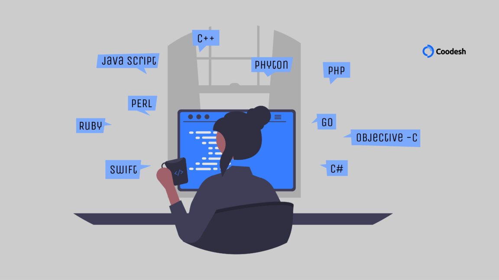

Imagens e vídeos
Imagens
As imagens seguintes representam como entendo ser o mundo da programação e meu futuro como uma pessoa desenvolvedora de software.



As imagens seguintes representam como entendo ser o mundo da programação e meu futuro como uma pessoa desenvolvedora de software.